Founder Project
PANDA-II as operator-side ecommerce proof.
PANDA-II should live separately from client work. It shows the founder side: building the brand, ecommerce presence, product presentation, content and growth system.

PANDA-II
Founder-built fashion brand, shown as a living ecommerce archive.
This page is ordered like a proof story: product photography, collaboration, store, Instagram, product demand, stats, orders, reviews and influencer proof.
Photography
Product images should breathe, so each one keeps its own vertical format inside a horizontal scroll.
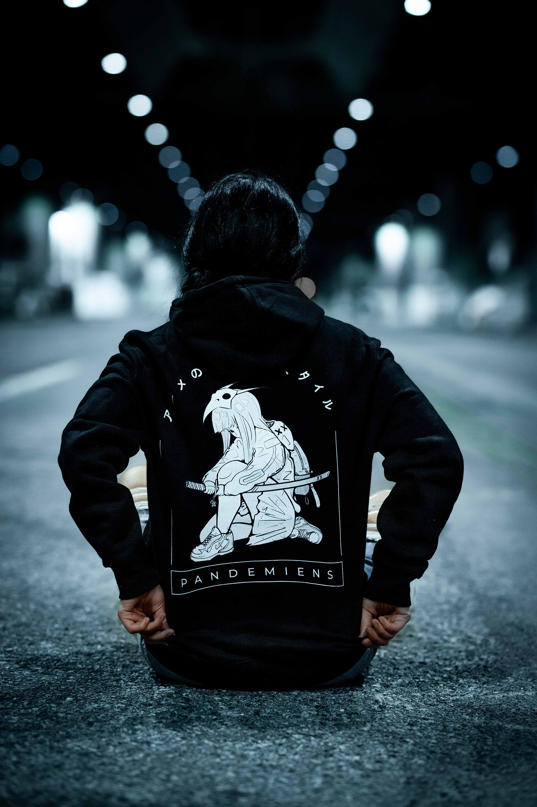
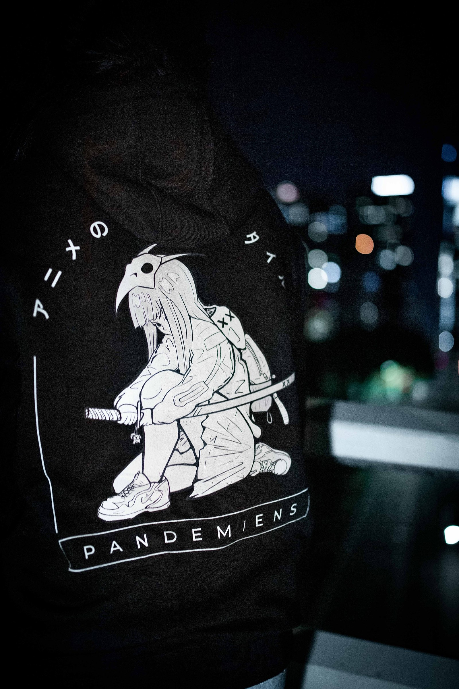
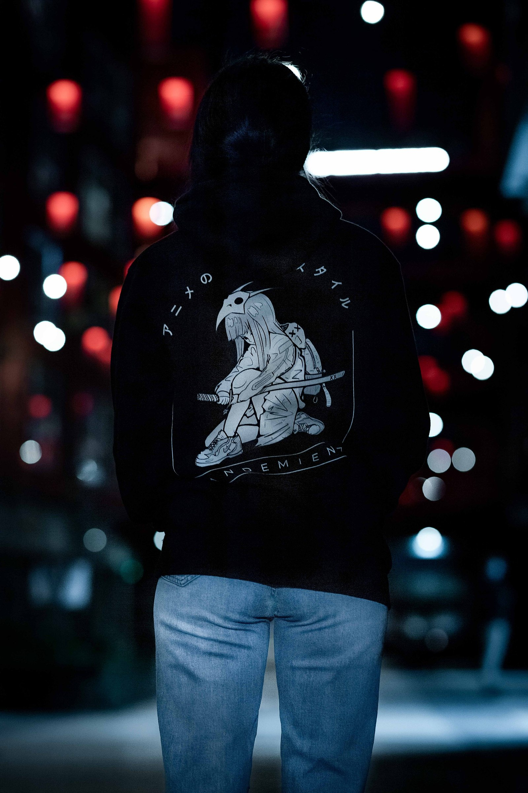
Photography Collab
The shoot itself becomes proof: product, styling and collaborator presentation in one visual system.

Website & Store
The ecommerce side of the founder project: product browsing, sale messaging and product detail pages.
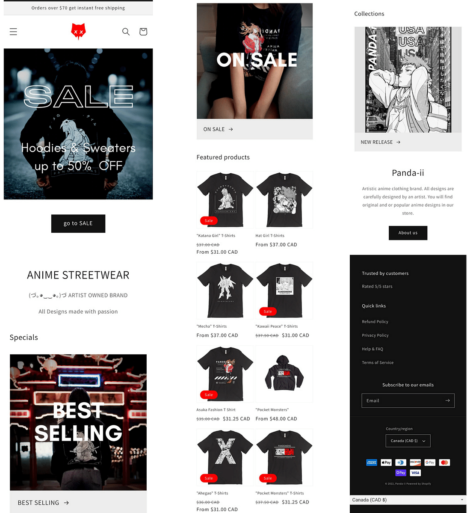
Follower count and brand profile proof, kept as one readable image.
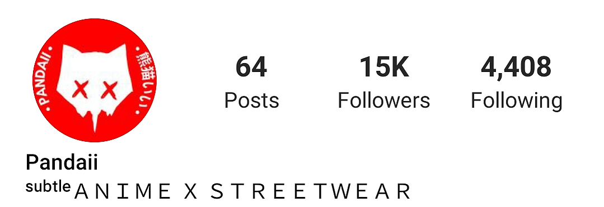
Content Feed
The public-facing feed shows range: product drops, graphics, outfit content and brand storytelling.
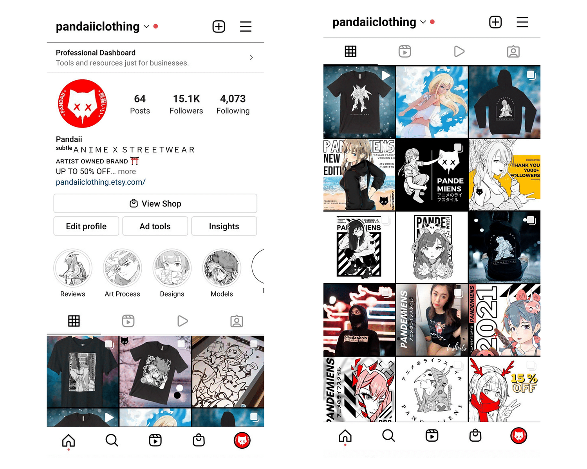
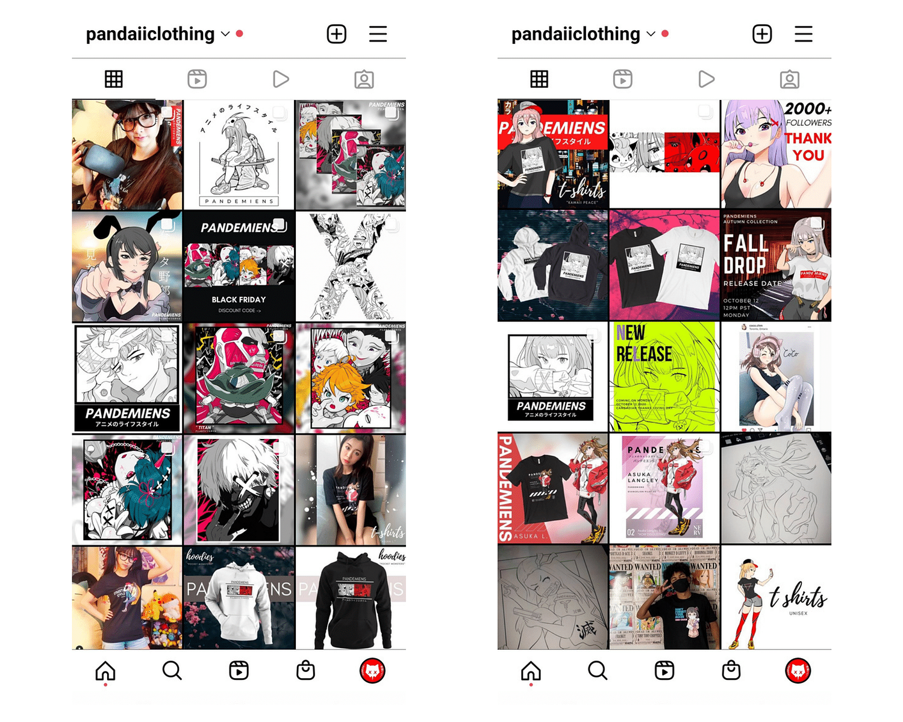
Popular Designs
Product demand is easier to understand when the strongest designs are grouped on their own.

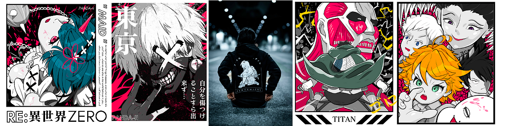
Stats & Orders
After the brand and product proof, show the operator proof: store analytics and order activity.


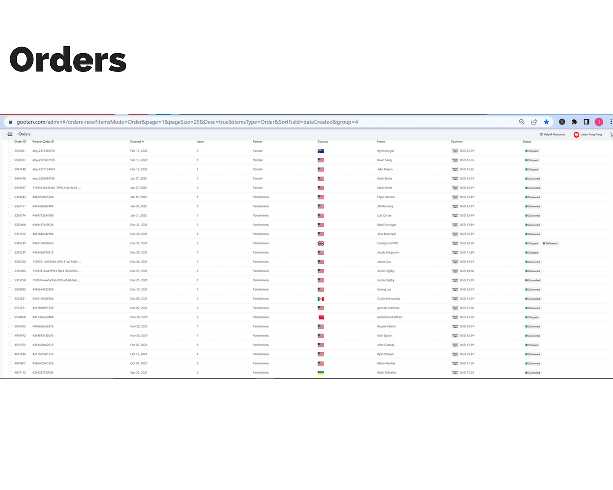
Reviews
Customer proof closes the loop after the product, content and performance sections.
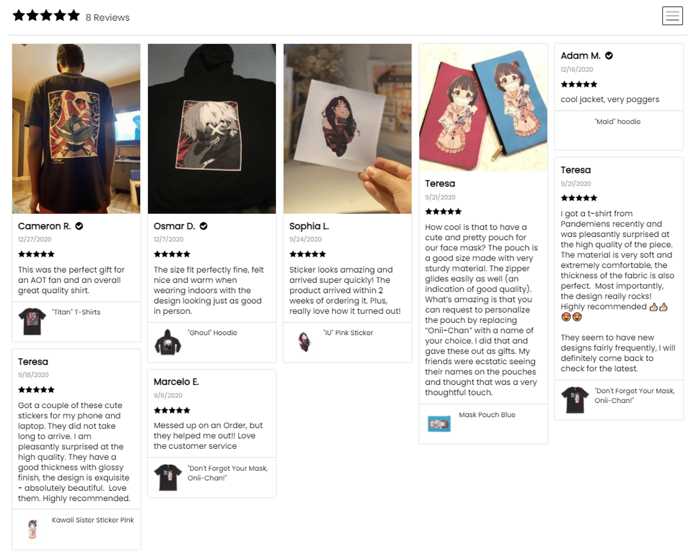
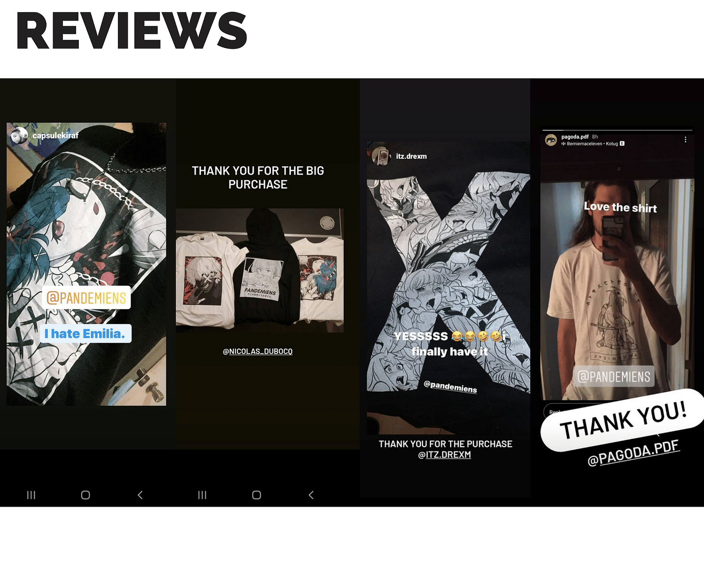
Influencer Collab
End with external social proof: a collaborator with audience and category relevance.